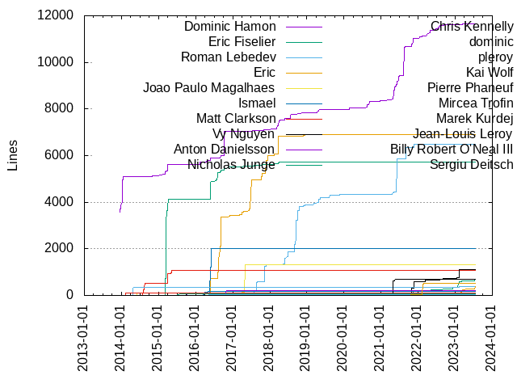
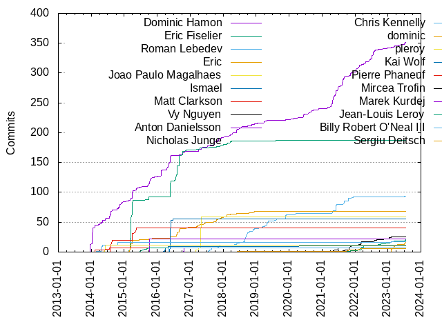

Authors
| Author | Commits (%) | + lines | - lines | First commit | Last commit | Age | Active days | # by commits |
|---|
| Dominic Hamon | 352 (24.75%) | 11655 | 7729 | 2013-12-18 | 2023-07-10 | 3490 days, 17:02:16 | 216 | 1 |
| Eric Fiselier | 187 (13.15%) | 5733 | 3651 | 2015-02-19 | 2019-08-07 | 1629 days, 23:18:35 | 53 | 2 |
| Roman Lebedev | 94 (6.61%) | 6486 | 2477 | 2017-07-24 | 2023-07-03 | 2169 days, 10:04:36 | 62 | 3 |
| Eric | 68 (4.78%) | 6914 | 4223 | 2015-02-18 | 2018-12-13 | 1394 days, 6:09:57 | 50 | 4 |
| Joao Paulo Magalhaes | 59 (4.15%) | 1327 | 429 | 2017-03-01 | 2017-05-02 | 61 days, 21:09:39 | 9 | 5 |
| Ismael | 55 (3.87%) | 2005 | 1191 | 2016-05-14 | 2016-06-27 | 44 days, 4:29:49 | 13 | 6 |
| Matt Clarkson | 40 (2.81%) | 1069 | 243 | 2014-07-30 | 2015-05-12 | 285 days, 23:18:24 | 15 | 7 |
| Vy Nguyen | 26 (1.83%) | 1121 | 212 | 2021-08-03 | 2023-05-11 | 645 days, 15:28:18 | 25 | 8 |
| Anton Danielsson | 22 (1.55%) | 79 | 58 | 2015-10-05 | 2015-10-09 | 3 days, 23:48:37 | 4 | 9 |
| Nicholas Junge | 21 (1.48%) | 688 | 503 | 2021-07-19 | 2023-07-17 | 728 days, 5:43:19 | 20 | 10 |
| Chris Kennelly | 17 (1.20%) | 373 | 112 | 2014-02-23 | 2023-02-06 | 3269 days, 20:54:58 | 7 | 11 |
| dominic | 16 (1.13%) | 373 | 262 | 2023-02-06 | 2023-07-14 | 157 days, 23:54:45 | 11 | 12 |
| pleroy | 11 (0.77%) | 101 | 56 | 2014-05-29 | 2014-06-09 | 10 days, 22:31:23 | 4 | 13 |
| Kai Wolf | 10 (0.70%) | 168 | 66 | 2016-03-24 | 2020-04-23 | 1490 days, 14:00:24 | 8 | 14 |
| Pierre Phaneuf | 7 (0.49%) | 115 | 5 | 2014-02-10 | 2014-07-23 | 162 days, 18:40:46 | 5 | 15 |
| Mircea Trofin | 7 (0.49%) | 697 | 30 | 2021-04-28 | 2021-06-28 | 61 days, 7:42:25 | 4 | 16 |
| Marek Kurdej | 7 (0.49%) | 193 | 21 | 2016-10-21 | 2016-10-28 | 7 days, 3:40:34 | 5 | 17 |
| Jean-Louis Leroy | 7 (0.49%) | 64 | 27 | 2015-04-13 | 2015-09-25 | 164 days, 19:52:14 | 4 | 18 |
| Billy Robert O'Neal III | 7 (0.49%) | 30 | 13 | 2016-04-27 | 2016-05-11 | 13 days, 16:32:09 | 3 | 19 |
| Sergiu Deitsch | 6 (0.42%) | 509 | 126 | 2018-06-05 | 2022-02-26 | 1361 days, 19:15:29 | 5 | 20 |
These didn't make it to the top: Victor Costan, Paul Wankadia, Matt Armstrong, Henrique Bucher, Chris Jones, Andy Christiansen, jpmag, Vitaly Zaitsev, Shuo Chen, Michał Janiszewski, Marat Dukhan, Geoff Romer, Evgeny Safronov, David Coeurjolly, Brian Wolfe, Bensuperpc, staffantj, Wink Saville, SunBlack, Sayan Bhattacharjee, Samuel Panzer, Pavel Davydov, Paul Redmond, Niklas Hofmann, Matthdonau, Martin Storsjö, Lei Xu, Jusufadis Bakamovic, Geoffrey Martin-Noble, Federico Ficarelli, Eugene Zhuk, Elliott Hughes, Eli Bendersky, BaaMeow, Arne Beer, Alex Strelnikov, zjx20, ryobg, dominc8, biojppm, Yury Fedorov, Yuri Khan, Yesudeep Mangalapilly, Yangqing Jia, Tobias Ulvgard, Tim, Phoenix Meadowlark, Paweł Bylica, Ori Livneh, Olzhas Kaiyrakhmet, Niklas Rosenstein, Nick, Nicholas Hutchinson, Nan Xiao, Mike Apodaca, Michael Tesch, Michael "Croydon" Keck, Martin Blanchard, Marcel Jacobse, Luís Marques, Liqiang TAO, Kyle Edwards, Kirill Bobyrev, Kaito Udagawa, Kai Germaschewski, Jussi Knuuttila, Jonathan Wakely, Jonas Otto, Jilin Zhou, Giuseppe Roberti, Fred Tingaud, Felix Homann, Dmitry Trifonov, Daniel Harvey, Cezary Skrzyński, Byoungchan Lee, Billy O'Neal, Arkady Shapkin, Antoine Prouvost, Alt, Alexander Popov, देवांश वार्ष्णेय, x.zhou, vladoovt, sharpe5, rorth, rolandschulz, pseyfert, pkasting, php1ic, oskidan, myd7349, mwinterb, mattreecebentley, maochongxin, ktnyt, jmillikin-stripe, izaid, huajingyun, hamptonm1, haih-g, guray, guanqun, feserr, dominic hamon, dependabot[bot], cui fliter, blackliner, batortaller, babbaj, astee, alekseyshl, Zi Xuan Wu (Zeson), Zbigniew Skowron, Yusuke Suzuki, YuanYingdong, Yoshinari Takaoka, Yixuan Qiu, Yingwei Zheng, Yasushi Saito, Yannic, Xinye Tao, Winston Du, Wes McKinney, Vincenzo Palazzo, Vadym, Tushar Maheshwari, Tom Madams, Tom Cobley, Tobias Ulvgård, Tobias Schmidt, Tim Bradgate, Tetsuo Kiso, Teodor Spæren, Szitár Gergő, Sven, Steven Wan, Steve Downey, Steinar H. Gunderson, Stefan Sauer, Skye Wanderman-Milne, Shiqing Yan, Shawn Zhong, Sergei Trofimovich, Scott K Logan, Sam Elliott, Sam Clegg, SSE4, Ryan, Ross McIlroy, Ronny, Robert Guo, Robert Adam, Reid Paape, Reid Kleckner, Raúl Marín, Ray Glover, Raghu Raja, Pichot, PhilipDeegan, Pavel V. Sysolyatin, Pavel Novikov, Pavel Campr, PCMan, Orgad Shaneh, Oleksandr, Norman Heino, Nico Weber, Mohamed Amin JABRI, Min-Yih Hsu, Michael Neumann, Michael Lippautz, Mayeul d'Avezac, Maxim Smolskiy, Matthias Donaubauer, Matthias Braun, Matt Sieren, Mariusz Wachowicz, Mario Emmenlauer, Marcin Kolny, Manuel Binna, MVafin, Louis Dionne, Lockywolf, LesnyRumcajs, Leo Koppel, Konstantin Khlebnikov, Kishan Kumar, Keith Moyer, Kamil Rytarowski, Joseph Loser, Jordan Williams, Jonathon Reinhart, Jessy De Lannoit, Jern-Kuan Leong, Jeremy Ong, JbR, Jatin Chaudhary, Jason Cooke, James Sharpe, Jakob Buchgraber, Ilya A. Kriveshko, Ian McKellar, Ian Henriksen, Hannes Hauswedell, Guillaume Chatelet, Gregorio Litenstein, Gregor Jasny, Greg Miller, Gary Miguel, Felix Duvallet, Fanbo Meng, Eric Backus, Enrico Seiler, Donald Aingworth, Dominik Czarnota, Dmitry Vyukov, Disconnect3d, Deniz Evrenci, Denis Glazachev, David Reynolds, David Kruger, Daniel Varga, Daniel Kraft, Cyrille, Colin Braley, Chunsheng Pei, Christian Wassermann, Christian Clauss, Chris Seymour, Chris Lalancette, Chinmay Dalal, Chilledheart, Changming Sun, Carlos O'Ryan, Bátor Tallér, Bulat Gaifullin, Bryan Lunt, Braedy, Brad Messer, Boris Dergachov, Björn Daase, Bernhard M. Wiedemann, Ben Clayton, BRevzin, Attila M. Szilagyi, Arkadiy Shapkin, Anton Lashkov, Anton Gladky, András Leitereg, Andriy Berestovskyy, Andrii Dushko, Andre Schroeder, Andre Meyering, Alisenai, Alexander Enaldiev, Alexander, Alex Reinking, Albert Pretorius, Alastair Murray, Aidan Wolter, Adam Badura, Abhina Sree, AJ Heller
Only top 20 authors shown
Only top 20 authors shown
| Month | Author | Commits (%) | Next top 5 | Number of authors |
|---|
| 2023-07 | Dominic Hamon | 4 (21.05% of 19) | dominic, Nicholas Junge, Andy Christiansen, देवांश वार्ष्णेय, dependabot[bot] | 11 |
| 2023-06 | Gary Miguel | 1 (25.00% of 4) | Chilledheart, Bulat Gaifullin, Andy Christiansen | 4 |
| 2023-05 | Dominic Hamon | 2 (28.57% of 7) | Andy Christiansen, dominic, Vy Nguyen, Pavel Novikov | 5 |
| 2023-03 | dominic | 5 (25.00% of 20) | Henrique Bucher, Dominic Hamon, Mike Apodaca, pkasting, Shiqing Yan | 9 |
| 2023-02 | dominic | 7 (36.84% of 19) | Nicholas Junge, hamptonm1, Yury Fedorov, Yingwei Zheng, Vy Nguyen | 12 |
| 2023-01 | SunBlack | 3 (60.00% of 5) | Vy Nguyen | 2 |
| 2022-12 | dominic hamon | 1 (20.00% of 5) | Yury Fedorov, Nicholas Junge, Jessy De Lannoit, Dominic Hamon | 5 |
| 2022-11 | Vy Nguyen | 1 (33.33% of 3) | Maxim Smolskiy, Dominic Hamon | 3 |
| 2022-10 | rorth | 1 (16.67% of 6) | Roman Lebedev, Raghu Raja, Nicholas Junge, Matthias Braun, Marat Dukhan | 6 |
| 2022-09 | Matt Armstrong | 2 (50.00% of 4) | Nicholas Junge, Dominic Hamon | 3 |
| 2022-08 | Vy Nguyen | 3 (25.00% of 12) | Dominic Hamon, babbaj, Pavel V. Sysolyatin, Nicholas Junge, Cezary Skrzyński | 8 |
| 2022-07 | Dominic Hamon | 12 (63.16% of 19) | Yuri Khan, maochongxin, Vy Nguyen, Ross McIlroy, Cezary Skrzyński | 7 |
| 2022-06 | Dominic Hamon | 5 (62.50% of 8) | Tom Cobley, Matthias Donaubauer, Alexander Popov | 4 |
| 2022-05 | Matthdonau | 3 (33.33% of 9) | Dominic Hamon, cui fliter, Zi Xuan Wu (Zeson), Nicholas Junge | 5 |
| 2022-04 | Nicholas Junge | 2 (50.00% of 4) | Dominic Hamon | 2 |
| 2022-03 | Nicholas Junge | 5 (33.33% of 15) | Vy Nguyen, Paul Wankadia, Dominic Hamon, Bátor Tallér, Brad Messer | 7 |
| 2022-02 | Dominic Hamon | 4 (30.77% of 13) | Sergiu Deitsch, Paul Wankadia, staffantj, batortaller, Vy Nguyen | 8 |
| 2022-01 | Dominic Hamon | 7 (53.85% of 13) | staffantj, YuanYingdong, Nicholas Junge, Matt Armstrong, Liqiang TAO | 6 |
| 2021-12 | dominc8 | 1 (20.00% of 5) | Shawn Zhong, Roman Lebedev, Martin Storsjö, Dominic Hamon | 5 |
| 2021-11 | Vy Nguyen | 5 (25.00% of 20) | Dominic Hamon, Bensuperpc, dominc8, Teodor Spæren, Roman Lebedev | 10 |
| 2021-10 | Vy Nguyen | 4 (25.00% of 16) | Roman Lebedev, Sergiu Deitsch, Byoungchan Lee, Vitaly Zaitsev, PhilipDeegan | 7 |
| 2021-09 | Roman Lebedev | 5 (41.67% of 12) | Dominic Hamon, Vitaly Zaitsev, Vy Nguyen | 4 |
| 2021-08 | Dominic Hamon | 12 (70.59% of 17) | Vy Nguyen, Roman Lebedev, Nico Weber, Marcel Jacobse | 5 |
| 2021-07 | Dominic Hamon | 3 (60.00% of 5) | Nicholas Junge, Braedy | 3 |
| 2021-06 | Roman Lebedev | 11 (35.48% of 31) | Dominic Hamon, Mircea Trofin, huajingyun, PCMan, Norman Heino | 8 |
| 2021-05 | Dominic Hamon | 11 (55.00% of 20) | Mircea Trofin, haih-g, Roman Lebedev, Paweł Bylica, Michał Janiszewski | 9 |
| 2021-04 | Dominic Hamon | 11 (61.11% of 18) | Roman Lebedev, Mircea Trofin, Matt Armstrong, Kai Germaschewski, Chris Lalancette | 6 |
| 2021-03 | Dominic Hamon | 2 (50.00% of 4) | Tobias Schmidt, Andre Meyering | 3 |
| 2021-02 | Phoenix Meadowlark | 2 (50.00% of 4) | SSE4, Michał Janiszewski | 3 |
| 2021-01 | Yannic | 1 (100.00% of 1) | | 1 |
| 2020-12 | feserr | 1 (33.33% of 3) | Dominic Hamon, Aidan Wolter | 3 |
| 2020-11 | Dominic Hamon | 2 (33.33% of 6) | Steven Wan, Scott K Logan, Mario Emmenlauer, Alexander | 5 |
| 2020-10 | Sergei Trofimovich | 1 (25.00% of 4) | Michael Neumann, Fanbo Meng, Abhina Sree | 4 |
| 2020-09 | Dominic Hamon | 3 (33.33% of 9) | Antoine Prouvost, Yesudeep Mangalapilly, Vitaly Zaitsev, Min-Yih Hsu, Jusufadis Bakamovic | 6 |
| 2020-08 | Dominic Hamon | 3 (42.86% of 7) | Yesudeep Mangalapilly, Jeremy Ong, Christian Wassermann, Adam Badura | 5 |
| 2020-07 | Chris Jones | 2 (50.00% of 4) | Dominic Hamon, Alexander Enaldiev | 3 |
| 2020-06 | Dominic Hamon | 6 (40.00% of 15) | Brian Wolfe, Jonas Otto, Skye Wanderman-Milne, Reid Paape, Chris Jones | 6 |
| 2020-05 | Chris Jones | 2 (66.67% of 3) | Christian Clauss | 2 |
| 2020-04 | Luís Marques | 2 (40.00% of 5) | Keith Moyer, Kai Wolf, Dominic Hamon | 4 |
| 2020-03 | Roman Lebedev | 2 (66.67% of 3) | Konstantin Khlebnikov | 2 |
| 2020-02 | Paweł Bylica | 1 (25.00% of 4) | Nick, Dominic Hamon, Ben Clayton | 4 |
| 2020-01 | Szitár Gergő | 1 (25.00% of 4) | Jordan Williams, Dominic Hamon, Alex Reinking | 4 |
| 2019-12 | Roman Lebedev | 2 (50.00% of 4) | Tetsuo Kiso, Martin Blanchard | 3 |
| 2019-11 | Roman Lebedev | 6 (75.00% of 8) | Gregor Jasny, Dominic Hamon | 3 |
| 2019-10 | Kyle Edwards | 2 (40.00% of 5) | Paul Wankadia, Martin Blanchard, András Leitereg | 4 |
| 2019-09 | Geoffrey Martin-Noble | 3 (42.86% of 7) | sharpe5, Colin Braley, Chunsheng Pei, Attila M. Szilagyi | 5 |
| 2019-08 | Sayan Bhattacharjee | 3 (42.86% of 7) | Roman Lebedev, LesnyRumcajs, Eric Fiselier | 4 |
| 2019-07 | blackliner | 1 (14.29% of 7) | Xinye Tao, Sam Elliott, Roman Lebedev, Jason Cooke, Eric Backus | 7 |
| 2019-06 | Orgad Shaneh | 1 (100.00% of 1) | | 1 |
| 2019-05 | Roman Lebedev | 4 (44.44% of 9) | Michał Janiszewski, Shuo Chen, Lockywolf, Dominic Hamon | 5 |
| 2019-04 | Roman Lebedev | 5 (38.46% of 13) | Dominic Hamon, astee, Michael Tesch, Jusufadis Bakamovic, Joseph Loser | 8 |
| 2019-03 | Roman Lebedev | 3 (33.33% of 9) | Dominic Hamon, Daniel Harvey, Michael Tesch, BaaMeow | 5 |
| 2019-02 | Jilin Zhou | 2 (40.00% of 5) | Wes McKinney, Roman Lebedev, Daniel Kraft | 4 |
| 2019-01 | Michael "Croydon" Keck | 1 (33.33% of 3) | Dominic Hamon, Andriy Berestovskyy | 3 |
| 2018-12 | Tobias Ulvgård | 1 (12.50% of 8) | Roman Lebedev, Reid Kleckner, Jusufadis Bakamovic, Jatin Chaudhary, Eric | 8 |
| 2018-11 | Roman Lebedev | 3 (33.33% of 9) | Dominic Hamon, Kirill Bobyrev, Eric, Denis Glazachev | 5 |
| 2018-10 | Roman Lebedev | 4 (36.36% of 11) | Olzhas Kaiyrakhmet, Victor Costan, Ilya A. Kriveshko, Gregorio Litenstein, Eric | 7 |
| 2018-09 | Roman Lebedev | 9 (64.29% of 14) | Martin Storsjö, pseyfert, Dominic Hamon, Changming Sun | 5 |
| 2018-08 | Roman Lebedev | 6 (60.00% of 10) | Michael "Croydon" Keck, Kirill Bobyrev, Bernhard M. Wiedemann, BaaMeow | 5 |
| 2018-07 | Federico Ficarelli | 3 (37.50% of 8) | Dominic Hamon, Ori Livneh | 3 |
| 2018-06 | Roman Lebedev | 2 (22.22% of 9) | Marat Dukhan, Dominic Hamon, Yoshinari Takaoka, Sergiu Deitsch, BaaMeow | 6 |
| 2018-05 | Dominic Hamon | 5 (26.32% of 19) | Roman Lebedev, Alex Strelnikov, Nan Xiao, php1ic, mattreecebentley | 10 |
| 2018-04 | Dominic Hamon | 3 (37.50% of 8) | Yangqing Jia, Victor Costan, Tim Bradgate, Fred Tingaud, Eric Fiselier | 6 |
| 2018-03 | Wink Saville | 3 (25.00% of 12) | Dominic Hamon, Eric Fiselier, jmillikin-stripe, alekseyshl, Robert Guo | 7 |
| 2018-02 | Eric | 4 (30.77% of 13) | Eric Fiselier, Samuel Panzer, Jonathan Wakely, Tim, Ian McKellar | 6 |
| 2018-01 | Dominic Hamon | 2 (33.33% of 6) | oskidan, Winston Du, Eric Fiselier, Eric | 5 |
| 2017-12 | Dominic Hamon | 2 (40.00% of 5) | Louis Dionne, Eric Fiselier, Eric | 4 |
| 2017-11 | Dominic Hamon | 5 (26.32% of 19) | Roman Lebedev, Eric, Victor Costan, Steinar H. Gunderson, Stefan Sauer | 9 |
| 2017-10 | Eric | 3 (27.27% of 11) | mwinterb, Yangqing Jia, Raúl Marín, Leo Koppel, Fred Tingaud | 9 |
| 2017-09 | Dominic Hamon | 5 (62.50% of 8) | Eric, Disconnect3d, Andre Schroeder | 4 |
| 2017-08 | Roman Lebedev | 4 (66.67% of 6) | Victor Costan, Dominic Hamon | 3 |
| 2017-07 | Roman Lebedev | 3 (37.50% of 8) | Dominic Hamon, Tom Madams, Eric Fiselier, Eric | 5 |
| 2017-06 | Eric | 3 (50.00% of 6) | Yixuan Qiu, Tim, Jern-Kuan Leong | 4 |
| 2017-05 | Joao Paulo Magalhaes | 20 (71.43% of 28) | Dominic Hamon, Tushar Maheshwari, Felix Duvallet, Eric Fiselier, David Kruger | 6 |
| 2017-04 | Joao Paulo Magalhaes | 35 (71.43% of 49) | Dominic Hamon, Giuseppe Roberti, Eric Fiselier, Dmitry Trifonov, vladoovt | 10 |
| 2017-03 | Joao Paulo Magalhaes | 4 (28.57% of 14) | Eric, jpmag, rolandschulz, Yasushi Saito, Ray Glover | 8 |
| 2017-02 | Marat Dukhan | 1 (100.00% of 1) | | 1 |
| 2017-01 | jpmag | 1 (20.00% of 5) | guray, Niklas Rosenstein, Matt Sieren, Alt | 5 |
| 2016-12 | Eric | 3 (50.00% of 6) | Pavel Campr, Niklas Rosenstein, BRevzin | 4 |
| 2016-11 | Eric Fiselier | 2 (100.00% of 2) | | 1 |
| 2016-10 | Marek Kurdej | 7 (36.84% of 19) | Eric Fiselier, Dominic Hamon, ktnyt | 4 |
| 2016-09 | Eric Fiselier | 12 (54.55% of 22) | Eric, Nicholas Hutchinson, Dominic Hamon, biojppm, Ronny | 7 |
| 2016-08 | Eric Fiselier | 25 (69.44% of 36) | Eric, biojppm, Marcin Kolny | 4 |
| 2016-07 | Eric Fiselier | 7 (63.64% of 11) | Vadym, Sven, Steve Downey, Elliott Hughes | 5 |
| 2016-06 | Ismael | 15 (75.00% of 20) | Dominic Hamon, Ryan, Nick | 4 |
| 2016-05 | Ismael | 40 (42.55% of 94) | Eric Fiselier, Dominic Hamon, Eric, Billy Robert O'Neal III, Billy O'Neal | 8 |
| 2016-04 | Dominic Hamon | 4 (33.33% of 12) | Billy Robert O'Neal III, Jussi Knuuttila, Kai Wolf, Dmitry Vyukov | 5 |
| 2016-03 | Kai Wolf | 7 (100.00% of 7) | | 1 |
| 2016-02 | Dominic Hamon | 11 (57.89% of 19) | Elliott Hughes, Mohamed Amin JABRI, Jakob Buchgraber, Ian Henriksen, Arkady Shapkin | 8 |
| 2015-12 | Eric Fiselier | 1 (33.33% of 3) | Eli Bendersky, Dominic Hamon | 3 |
| 2015-11 | ryobg | 2 (33.33% of 6) | Dominic Hamon, Eric, Dominik Czarnota | 4 |
| 2015-10 | Anton Danielsson | 22 (51.16% of 43) | Dominic Hamon, Eric Fiselier, Tobias Ulvgard, izaid, guanqun | 9 |
| 2015-09 | Dominic Hamon | 4 (40.00% of 10) | Jean-Louis Leroy, Eli Bendersky, Greg Miller, Eric Fiselier | 5 |
| 2015-08 | Dominic Hamon | 1 (100.00% of 1) | | 1 |
| 2015-06 | Kaito Udagawa | 2 (28.57% of 7) | Dominic Hamon, myd7349, Jean-Louis Leroy, Eric | 5 |
| 2015-05 | Dominic Hamon | 4 (57.14% of 7) | Matt Clarkson, David Coeurjolly | 3 |
| 2015-04 | Matt Clarkson | 8 (25.81% of 31) | Eric Fiselier, Dominic Hamon, Jean-Louis Leroy, Geoff Romer, Eric | 7 |
| 2015-03 | Eric Fiselier | 78 (68.42% of 114) | Eric, Dominic Hamon, Matt Clarkson | 4 |
| 2015-02 | Pavel Davydov | 3 (33.33% of 9) | Dominic Hamon, Eric Fiselier, Eric | 4 |
| 2014-12 | Dominic Hamon | 4 (100.00% of 4) | | 1 |
| 2014-11 | Dominic Hamon | 5 (41.67% of 12) | Evgeny Safronov, Matt Clarkson, Lei Xu | 4 |
| 2014-10 | Dominic Hamon | 5 (33.33% of 15) | Chris Kennelly, Niklas Hofmann, zjx20, x.zhou | 5 |
| 2014-08 | Matt Clarkson | 10 (62.50% of 16) | Dominic Hamon | 2 |
| 2014-07 | Matt Clarkson | 10 (41.67% of 24) | Dominic Hamon, Paul Redmond, Pierre Phaneuf, Lei Xu | 5 |
| 2014-06 | pleroy | 7 (53.85% of 13) | Dominic Hamon, Pierre Phaneuf, Chris Kennelly | 4 |
| 2014-05 | pleroy | 4 (40.00% of 10) | Dominic Hamon, Chris Kennelly | 3 |
| 2014-04 | Chris Kennelly | 7 (41.18% of 17) | Dominic Hamon, Shuo Chen, Arne Beer | 4 |
| 2014-03 | Felix Homann | 2 (66.67% of 3) | Dominic Hamon | 2 |
| 2014-02 | Pierre Phaneuf | 4 (28.57% of 14) | Dominic Hamon, David Coeurjolly, Yusuke Suzuki, Chris Seymour, Chris Kennelly | 6 |
| 2014-01 | Dominic Hamon | 28 (87.50% of 32) | Eugene Zhuk, Oleksandr | 3 |
| 2013-12 | Dominic Hamon | 13 (100.00% of 13) | | 1 |
| Year | Author | Commits (%) | Next top 5 | Number of authors |
|---|
| 2023 | dominic | 16 (21.62% of 74) | Dominic Hamon, Nicholas Junge, Henrique Bucher, Andy Christiansen, Vy Nguyen | 31 |
| 2022 | Dominic Hamon | 40 (36.04% of 111) | Nicholas Junge, Vy Nguyen, Paul Wankadia, staffantj, Matthdonau | 37 |
| 2021 | Dominic Hamon | 61 (39.87% of 153) | Roman Lebedev, Vy Nguyen, Mircea Trofin, Vitaly Zaitsev, Sergiu Deitsch | 38 |
| 2020 | Dominic Hamon | 19 (28.36% of 67) | Chris Jones, Brian Wolfe, Yesudeep Mangalapilly, Roman Lebedev, Luís Marques | 37 |
| 2019 | Roman Lebedev | 24 (30.77% of 78) | Dominic Hamon, Sayan Bhattacharjee, Geoffrey Martin-Noble, Michał Janiszewski, Michael Tesch | 39 |
| 2018 | Roman Lebedev | 28 (22.05% of 127) | Dominic Hamon, Eric, Eric Fiselier, Wink Saville, Samuel Panzer | 46 |
| 2017 | Joao Paulo Magalhaes | 59 (36.88% of 160) | Dominic Hamon, Eric, Roman Lebedev, Eric Fiselier, jpmag | 41 |
| 2016 | Eric Fiselier | 78 (31.45% of 248) | Ismael, Dominic Hamon, Eric, Kai Wolf, Marek Kurdej | 32 |
| 2015 | Eric Fiselier | 93 (40.26% of 231) | Dominic Hamon, Eric, Anton Danielsson, Matt Clarkson, Jean-Louis Leroy | 21 |
| 2014 | Dominic Hamon | 71 (44.38% of 160) | Matt Clarkson, Chris Kennelly, pleroy, Pierre Phaneuf, Evgeny Safronov | 19 |
| 2013 | Dominic Hamon | 13 (100.00% of 13) | | 1 |
| Domains | Total (%) |
|---|
| users.noreply.github.com | 353 (24.82%) |
|---|
| gmail.com | 312 (21.94%) |
|---|
| efcs.ca | 255 (17.93%) |
|---|
| google.com | 147 (10.34%) |
|---|
| jpmag.me | 62 (4.36%) |
|---|
| hotmail.es | 47 (3.31%) |
|---|
| stripysock.com | 45 (3.16%) |
|---|
| dirac.se | 24 (1.69%) |
|---|
| web.de | 22 (1.55%) |
|---|
| ckennelly.com | 16 (1.13%) |
|---|